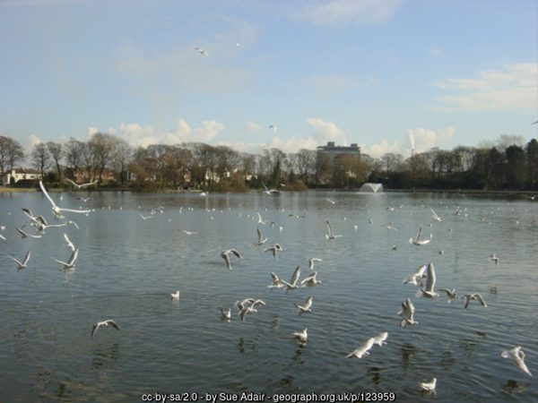

George Michael Bashes his Bishop - Again

Photo (2006) © Sue Adair, Geograph, CC BY-SA 2.0
A shocked council worker was highly embarrassed last week, having caught a major celebrity up to no good in Taylor Park. The star in question was none other than the sophisticated Greek-Cypriot, George Michael (real name Giorgios Paniyotobodobolopolis).
Park warden Bob Trousersnake was going about his business as usual, when he entered the small toilet unit near the park's café.
"The first thing offence occurred when I heard someone singing "The Edge of Heaven", in one of the cubicles. Anyone familiar with the park's rules would know that performing in the park without prior consent is prohibited. So, I politely tapped on the door to caution the offender. Unfortunately, the door had not been locked and swung open as I knocked on it. You wouldn't believe what I saw…"
"Only George Michael with his pants round his ankles and a copy of Razzle!" Trousersnake exclaimed.
Apparently Michael was in the middle of flogging his log, when Bob came upon him. "What really pissed me off", continued Bob, "was that he never stopped. He just carried on polishing his pork sword and staring at me. Michael is obviously proud of his spam javelin and had no shame. He even invited me to 'give it a stroke'."
"Well, I was flabbergasted to say the least", continued Trousersnake.
Our reporter contacted Michael in his luxury apartment on Prescot Road for an explanation.
"I was only going for a piss after feeding the ducks. That fucking Trousersnake is a lying bastard and he tried it on with me."
Bob Trousersnake is denying the megastar's retort, but all his mates are now ripping the shit out of him.